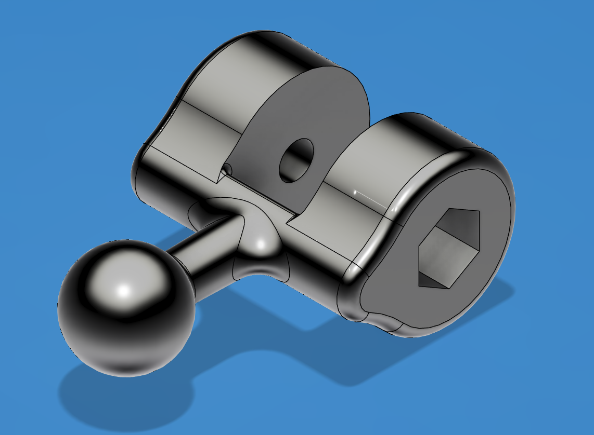
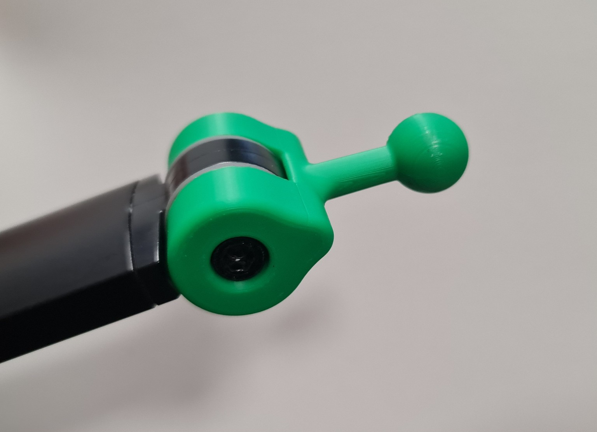
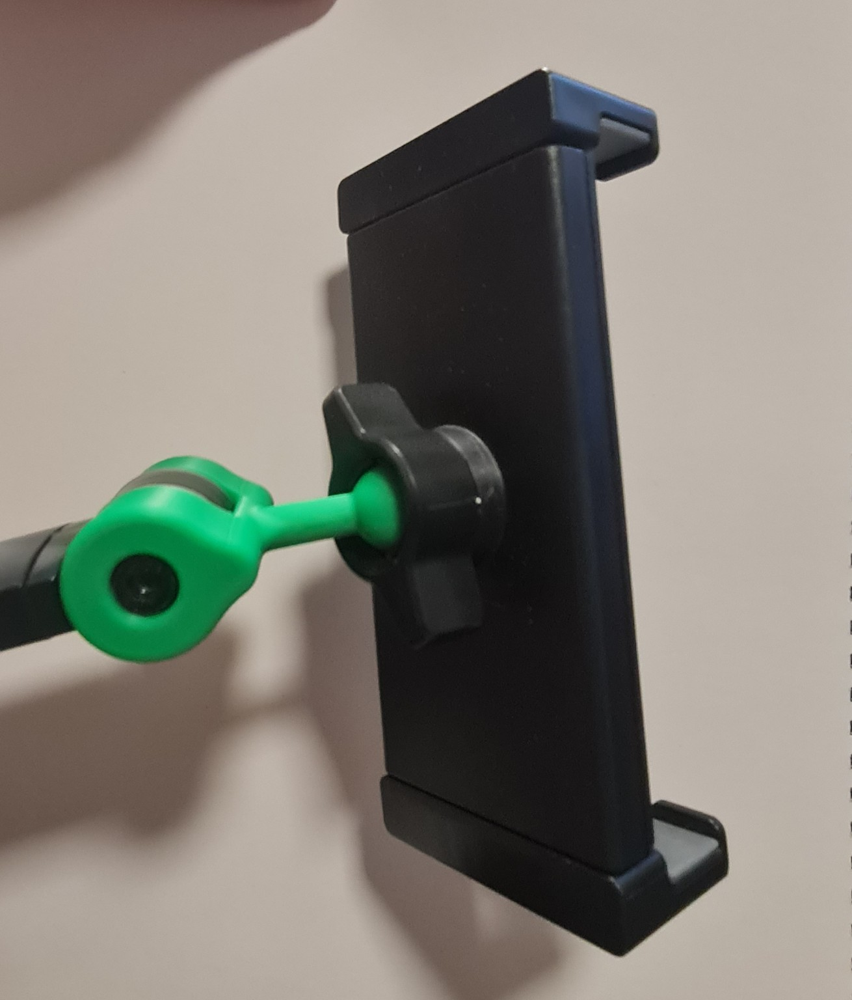

Projekt 01 · Ersatzteil & 3D-Druck
Handyhalterung – Kugelgelenk nachkonstruiert und 3D-gedruckt
Das Kugelgelenk der vorhandenen Handyhalterung war gebrochen. Das defekte Bauteil wurde anhand des Originals in CAD nachkonstruiert und anschließend im 3D-Druck neu gefertigt. Nach der Montage konnte die vorhandene Handyhalterung weiterverwendet werden.


